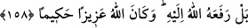

nefis bedenden ayrıldıktan ve bedenin karanlıklarından kurtulduktan sonra uçsuz
bucaksız semâlara ve celâl âleminin nurlarına uçar. Orada parlaklığı ve mutluluğu artar.
Mâlumdur ki, bu haller, herkese hâsıl olmaz. Hz. Âdem’den kıyâmete kadar pek az
kişiye nasîb olur.
Hristiyanlardan Milkânîler öldürme ve asma fiillerinin Hz. Îsâ’nın lâhûtuna doğrudan
değil, his ve şuur ile ulaştığını iddiâ etmişlerdir.
Yine hristiyanlardan yakûbîler öldürme ve asma fiillerinin iki cevherden doğan bir
cevher olan Mesîh’e vâki olduğunu iddiâ etmişlerdir.
158- Bilakis Allah onu (İsâ’yı) kendi nezdine kaldırmıştır. Allah izzet ve hikmet
sahibidir.
“Bilakis” onların iddialarının aksine “Allah onu kendi nezdine kaldırmıştır.” Âyette
Hz. Îsâ’nın öldürüldüğü iddiâsı, red ve inkâr edilmekte, Allah katına yükseltildiği isbat
edilmektedir.
Hasan Basrî (k.s.) âyetin tefsirinde şöyle der: Allah onu, kendisinin kerâmet mahalli
ve meleklerin makarrı olan semâya yükseltmiştir. Orada Allah’tan başkasının hükmü
geçmez.
Hz. Îsâ’nın semâya yükseltilmesi, onun Allah katına yükseltilmesi olarak ifâde
edilmiştir. Çünkü bu yükseltme, kulların hükmünün onun üzerinde cereyan etmemesi
içindir. Nitekim şu âyet de bu kabildendir: “Allah’a hicret etmek üzere evinden çıkan
kimse...” (Nisâ, 4/100) Halbuki hicret Medine’yedir. Yine “Ben Rabbime gidiyorum.”
(Saffât, 37/99) âyeti de bu kabildendir. Bunun mânâsı: Beni Rabbime ibadetten hiç
kimsenin alıkoymayacağı bir yere gidiyorum, demektir.
İsâ (a.s.)’ın semâya kaldırılmasının hikmeti, Allah Teâlâ’nın onun bereketinden
faydalanmaları için meleklerle berâber olmasını istemesidir. Çünkü o, “kelimetullah”
yâni, Allah’ın kelimesi ve ruhudur. Hz. Âdem’in meleklere eşyânın isimlerini ve diğer
bâzı bilgileri öğretmesi sebebiyle bereketin hâsıl olması da böyledir. Nitekim âyette:
“Allah katında Îsâ’nın durumu, Âdem’in durumu gibidir.” (Âl-i İmran, 3/59)
buyurulmuştur.
Denilmiştir ki, Hz. Îsâ’nın göğe kaldırılması, dünyevî vücûda gelişinin şehvet
yoluyla, dünyâdan çıkışının ise kuvvet ve şiddet yoluyla olmamasındandır. Dünyâya
ilâhî kudret ile girmiş ve ilâhî izzet ile çıkmıştır. “Allah, izzet sâhibidir” güçlüdür.
O’nun murad ettiği bir şeyin meydana gelmesini hiç bir kuvvet engelleyemez. O’nun
izzeti, kemaliyle kudret sahibi olmasındandır. Hz. Îsâ’nın göğe kaldırılması, beşer
kudreti açısından bakıldığında imkansız görünse de Allah’ın kudretine nisbetle bu çok
kolaydır. O’nun kudretinin üstünde hiç bir şey yoktur.